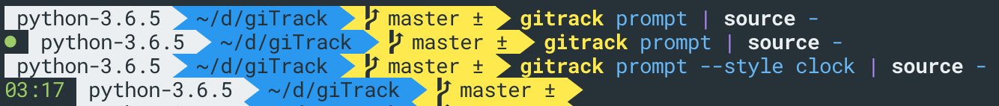

Usage¶
The basic usage of giTrack is very simple. You have to do three steps:
- initialize the Git repo for giTrack usage -
gitrack init - start tracking -
gitrack start - work and commit it
- stop tracking -
gitrack stop
It is good idea to check out help pages (--help) for the commands to see possible options!
Initialization¶
During initialization gitrack collects configuration for the repository during bootstrap process. It also installs the Git hooks that are essential for the tracking itself.
Skip of bootstrap
If during the initialization .gitrack file is found in root of the repo, the bootstrap process is skipped and
the configuration from this file is used instead.
The installation process should be fairly smart and cover most of the basic cases, even with already existing
post-commit hook. In case you want to handle installation of the hook on your own, you can initialize the repo with
--no-hook option which skips the hook installation. In such a case then it is your responsibility to ensure that the command
gitrack hooks post-commit is called on post-commit hook.
In case you want to install only the hook without initialization you can use --install-hook
You can specify destination of the bootstrapped configuration using -c / --config-destination option. More about configuration
in separate section.
Absolute paths
giTrack currently uses absolute paths in many places, therefore moving the Git repository's folder after initialization will most likely break things. You have been warned.
Task support¶
giTrack enables you to assign the time entries created to tasks in the provider's domain. This has to be supported by your chosen provider.
There are three modes how this is done:
- static mode - an static value defined by you during the
initphase. - dynamic mode based on branch name - dynamically parsed value from the current branch's name when the commit is created.
- dynamic mode based on commit message - dynamically parsed value from the commit message.
For the dynamic modes the parsing is done using Python Regex that you have to supply during initialization.
This regex needs to contain capturing group with name task, that needs to extract the name or ID of the task,
that should be assigned to the time entry.
Project support¶
giTrack enables you also to assign the time entries created to specific project. Similarly to the task support, this needs to be supported by your chosen provider.
During the init phase, you can choose to enable this feature and then you will
specify ID or name of the project to be assigned to the time entries.
Prompt integration¶
gitrack prompt
If you would like to keep overview of giTrack's status, you can use shell prompt's integration. There are two styles of the prompt integration:
- simple - a dot prepended to the shell which is shown either in green (tracking started) or
red (no tracking) color displaying giTrack's status. - clock - displays how long it is since the last time entry created / commit.

Info
The changes to the prompt are not exported hence if you want them persistent, you should
place the activating command into your rc file.
Shell completion¶
gitrack completion
giTrack supports commands/options completion for bash, zsh, PowerShell and fish shells.
To enable the completion run gitrack completion install.
This command will install completion based on your current shell, it mostly consist of adding
_GITRACK_COMPLETE variable to your rc file. If you want to inspect details you can
run gitrack completion show.
Direnv tip¶
For even more automatization, you can use awesome tool direnv for automatically starting tracking when you change directory into your Git repo. Unfortunately there is currently no support for unloading-hook (the support for it is discussed here, you can ask authors to incorporate into their work), so you still have to stop your time tracking manually when you are done.